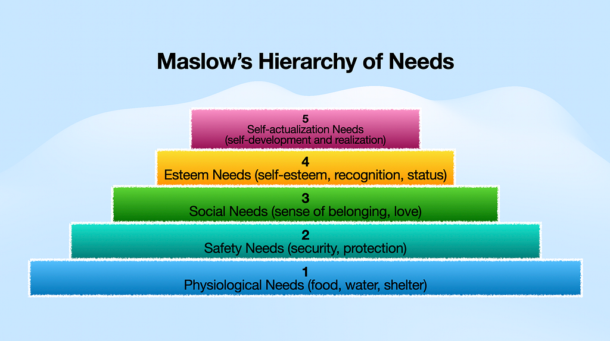

Motivation — Maslow’s Hierarchy of Needs
Motivation — Maslow’s Hierarchy of Needs
แรงจูงใจ — ลำดับขั้นความต้องการของมาสโลว์

‘Maslow’s Hierarchy of Needs’ ไม่เขียนถึงทฤษฎีนี้ไม่ได้แล้วค่ะ จากที่อาจารย์สองท่านนำทฤษฎีนี้มาเล่าใน 2 วิชาหลัก (หลักสูตร Executive MBA) คือ
1. วิชา Human Resource & Organization Behavior สอนโดยศาสตราจารย์ ดร.มณีวรรณ ฉัตรอุทัย
2. วิชา Marketing Management สอนโดยผู้ช่วยศาสตราจารย์ ดร.ปิยะ งามเจริญมงคล
ในมุมของการบริหารคน
หากเราเรียนรู้ เข้าใจลำดับขั้นความต้องการของมนุษย์ เข้าใจถึงแรงจูงใจในความต้องการต่างๆ น่าจะทำให้เราเชื่อมโยงเข้าถึงเพื่อนร่วมงานของเรา ทีมงานของเรา หัวหน้าของเรา รวมถึงคนรอบตัวเราได้ดี นั่นอาจจะเพิ่มคุณภาพความสัมพันธ์ของเรากับผู้คนและการทำงานได้อย่างมีความสุข รวมถึงมีประสิทธิภาพมากขึ้น
ในมุมของการบริหารการตลาด
การเข้าใจความต้องการของผู้บริโภคในแต่ละลำดับขั้น ก็น่าจะสามารถสร้างแรงจูงใจเชื่อมโยงกลับมาที่สินค้า ราคา ช่องทางการจำหน่าย และการสื่อสารกับผู้บริโภคได้ตรงต่อความต้องการในแต่ละลำดับขั้น ซึ่งอาจจะทำให้สินค้าหรือบริการของเราครองใจ อยู่ในใจผู้บริโภคได้มากยิ่งขึ้น
ทฤษฎี Maslow’s Hierarchy of Needs ได้อธิบายเอาไว้ดังนี้ค่ะ
มนุษย์เราจะมีลำดับขั้นความต้องการอยู่ และจะหาวิธีที่จะได้รับการเติมเต็มตามความต้องการในแต่ละลำดับขั้น ไต่ขึ้นไปเรื่อยๆ ตั้งแต่ขั้นที่ 1 จนถึงขั้นที่ 5
ขั้นที่ 1 Physiological Needs (food, water, shelter)
ความต้องการพื้นฐานในการดำรงชีพ ได้แก่ อาหาร, อากาศ, น้ำดื่ม, เสื้อผ้า, ที่อยู่อาศัย เป็นต้น ในคนไทยเปรียบให้คุ้นชิน เราว่าเหมือนปัจจัยสี่ค่ะ ถ้าในมุมด้านหน้าที่การงาน เปรียบเสมือนค่าแรงขั้นต่ำที่อย่างน้อยเราต้องมีเพื่อยังชีพค่ะ
ขั้นที่ 2 Safety Needs (security, protection)
เมื่อเราได้ความต้องการขั้น 1 เป็นที่เรียบร้อยแล้ว เราจะเริ่มมีความความต้องการด้านความปลอดภัย ไม่ว่าจะเป็นที่อยู่อาศัยที่ปลอดภัย ไปจนถึงความมั่นคงทางด้านการงาน มีสวัสดิการ มีสัญญาจ้างงาน มีความปลอดภัยขณะปฏิบัติงาน เช่น พนักงานรักษาความปลอดภัยมีเสื้อผ้าที่สร้างภาพลักษณ์ที่เข้มแข็งน่ายำเกรงเป็นระเบียบ มีอาวุธตามความเหมาะสมตามหน้างาน มีป้อมยามหรือจุดปฏิบัติงานที่มีลักษณะแข็งแรงปลอดภัย มีประกันชีวิตให้ความคุ้มครองขณะปฏิบัติงาน เป็นต้น
ขั้นที่ 3 Social Needs (sense of belonging, love)
เมื่อเราได้ตอบสนองความต้องการขั้นที่ 2 ของเราแล้ว ต่อมาเราจะเริ่มมีความต้องการในด้านความรัก อยากจะมีคนรัก อยากจะมีเพื่อนรัก ต้องการมีความเป็นส่วนหนึ่งในครอบครัว เป็นส่วนหนึ่งในกลุ่มเพื่อน เป็นส่วนหนึ่งในสังคม
ขั้นที่ 4 Esteem Needs (self-esteem, recongnition, status)
เมื่อเราได้เติมเต็มความต้องการขั้นที่ 3 ให้กับตัวเองด้วยการมีความรัก มีความเป็นส่วนหนึ่งในสังคมเป็นที่เรียบร้อยแล้ว เราจะเริ่มโหยหาความมั่นคงทางจิตใจ ความเคารพในความสามารถของตนเอง ความภูมิใจในผลงานของเรา และต้องการการยอมรับจากผู้อื่นในด้าน ชื่อเสียง เกียรติยศ สถานะทางสังคม ถ้าในมุมมองหน้าที่การงาน ก็ได้รับการยอมรับจากเพื่อนร่วมงาน จากหัวหน้า ได้รับคำชมเชย ได้รางวัลต่างๆ ได้รับการเลื่อนตำแหน่ง ซึ่งทั้งหมดนี้เป็นการเติมเต็มคุณค่าในตัวเองสำหรับความต้องการในลำดับขึ้นนี้ค่ะ
ขั้นที่ 5 Self-actualization Needs (self-development and realization)
ลำดับสูงสุดของความต้องการ เป็นที่สุดของความต้องการของมนุษย์ คือ การได้พัฒนาตนเองจนเต็มศักยภาพ หรือเป็นตัวเองในเวอร์ชั่นที่ดีที่สุด (my best version) ได้ทำงานที่มีความหมายตรงกับคุณค่าภายในของตนเอง ประสบความสำเร็จในชีวิตของตนเอง และนำความรู้ความสามารถมาช่วยสร้างคุณค่าอย่างเป็นประโยชน์ในสังคม รู้คุณค่า สร้างคุณค่าในงานที่ทำ สร้างสรรค์ เป็นแรงบันดาลใจให้กับผู้อื่น
พอเรียนรู้ทฤษฎีนี้แล้ว เราอดไม่ได้ แอบเช็คตัวเองเหมือนกันค่ะ ว่าตอนนี้ตัวเราเองอยู่ลำดับขั้นไหนแล้ว แล้วเรากำลังจะไปขั้นไหนต่อ
ขอให้ทุกท่านสนุกกับการอ่านค่ะ